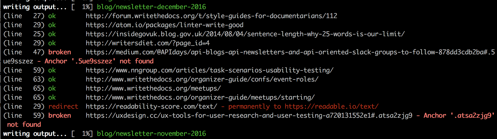

Testing your documentation¶
Testing your documentation allows you to make sure it is in a consistent state. Doing this gives your users a better experience, and reduces stress around common issues as a writer.
This article by Anne Gentle is a good place to start to understand this concept.
Continuous integration¶
The most useful tests are run on each commit of your project. This is called Continuous Integration, and is a common practice in the software development world.
We recommend checking out the following tools to get started:
Build errors¶
The easiest automated check to do is to make sure your documentation builds properly. This requires simply running your documentation tool, and checking that it has properly built your documentation.
Most tools will return an error code of 0 if the process is successful. This means you should just be able to do a normal build of your tool, and your testing tool will know if it is successful or not.
If your build tool has a picky mode that flags warnings that might be problematic as well as errors, it might make sense to switch it on, but you’ll want to make sure that your documentation is in good shape before you do.
- Sphinx has nitpicky mode.
- Jekyll has strict mode.
Link testing¶
Making sure all the hyperlinks in your docs are working is a really great place to start. This makes sure your users don’t hit dead ends, and is quite simple in terms of automation.
You can either:
- Use a tool provided with your documentation tools
- Treat your rendered documentation as a normal website, and use a website link checker
These are the tools we know with proper link checking:
Sphinx¶
Sphinx ships with a linkcheck builder as a default.
You can run it with a simple:
make linkcheck
Its output looks something like this:

Jekyll¶
Jekyll has a few plugins that support link checking:
HTMLProofer¶
HTMLProofer checks links in HTML, as well as images, titles and tag validity.
Style guide checking and linting¶
Linters are tools that automatically verify specific rules against your code or documentation. This is useful for enforcing a style guide, or for catching commonly mistaken branding issues.
Here are a few links that might be interesting:
Vale¶
Vale is a syntax-aware linter for prose built for speed and extensibility.
https://github.com/errata-ai/vale
You can use the following styles with Vale, although as of v2.0.0, Vale no longer includes these styles by default:
You can also use an implementation of both the Microsoft Writing Style Guide and the Google Developer Documentation Style Guide with Vale. You can find these styles in the following repository: https://github.com/errata-ai/styles.
To configure Vale, follow the instructions in the README. If needed, install the vale binary as an executable in your $PATH, so you can run vale directly from the command line. For example, on UNIX/Linux systems, you can copy vale to the /usr/local/bin directory.
After installing Vale, run the following commands to check for proper installation:
$ vale
$ vale dc
If you see empty JSON in the output to the second command, you’ve successfully installed Vale.
Now to configure Vale, you’ll need a .vale or a .vale.ini configuration file. For some examples, see
- https://github.com/writethedocs/www/blob/master/.vale.ini
- https://github.com/cockroachdb/docs/blob/master/.vale.ini
- https://github.com/linode/docs/blob/develop/.vale.ini
While it’s possible to install the Vale configuration file in different locations, it may be most convenient to install it in the root directory of your target repository, as shown in the noted examples.
Once configured for your repository, you should be able to navigate to your repository path, and then run vale dc to confirm your configuration.
You can then apply Vale as a grammar linter directly to your source files, with a command like:
$ vale /path/to/someText.md
Hint: Vale even works with XML files, such as those in DocBook and DITA, as long as you’ve included *.xml in the Vale configuration file.